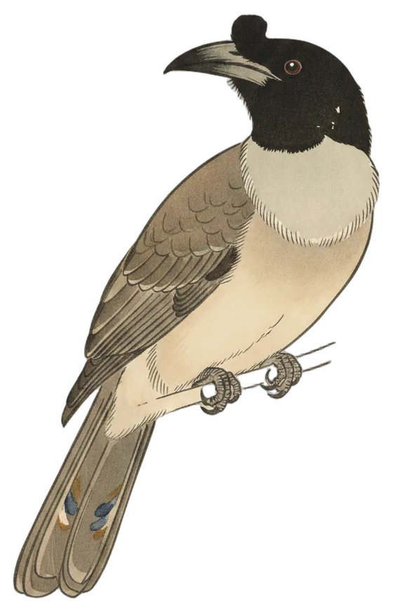

Lead story
Noisy Friarbird heads a ten-species day
Heard twice, among ten species at the station in the last 24 hours.

The Noisy Friarbird (Philemon corniculatus) was heard twice in the 24 hours to 8:30 am, first at 9:26 am yesterday and last at 9:27 am yesterday. Its clearest call scored 83% confidence.
It has now been heard on three days of the station's 49. BirdNET's range model rates it one of the most widespread birds around Canberra. Atlas of Living Australia records show it is a summer migrant to the Canberra region, most often recorded in October, November and December.
- Calls
- 2
- First heard
- Tue 9:26 am
- Best call
- 83%
- Days heard
- 3 of 49